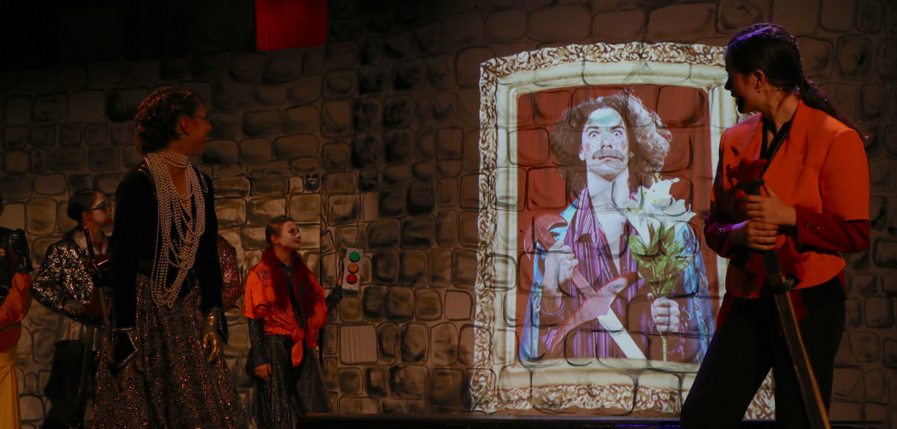

As student technical director of the program this year, I am responsible for making the technical side of our productions come together, including 10 student-directed and 2 faculty-directed productions. With fellow students producing and designing each of these shows, much of my job is to lead and mentor others. Please note that I am only listing my major technical roles, and not including my acting credits.
| Stage Manager, Never Swim Alone | Nov 2017 |
|---|---|
| Projectionist, King John | Nov 2017 |
| Director, Catastrophe | Jun 2017 |
| Mentor Stage Manager, How to Eat Like a Child | Apr 2017 |
| Stage Manager, Stupid Fucking Bird | Feb 2017 |
| Stage Manager, Lighting Designer, Actor, Star Skipper | Dec 2016 |
| Stage Manager, Lighting Designer, The Amish Project | Nov 2016 |
| Lighting Designer and Operator, Dog Sees God | Jun 2016 |
| Stage Manager, Welcome to the Moon | May 2016 |
| Stage Manager, The Children’s Hour | Feb 2016 |
| Sound Designer, Guilty Conscience | Feb 2015 |
The middle school musical this year was an adaption of Shakespeare’s King John, featuring costumes inspired by "high fashion," bold LED lighting, and prop swords designed to evoke tasers. The production’s concept involved a large medieval tower center-stage, on which projections of various characters would appear.
My setup involved a projector that already existed in the space, refocused to cover the front surface of the tower. I set up a custom surface in QLab using bézier curves to account for the curved tower, and then designed the images and video to be projected in Photoshop and Final Cut Pro X.
One of the most dramatic moments of the show is when Arthur, rightful heir to the English throne, falls off of a tower to his death. After my plans to install a crash mat under the tower were shot down, I was asked to instead create a falling silouette video to project onto the side of the tower. This task took a lot of preparation: I had to imagine what a free-falling silouette might look like, set up a video shoot, and then work with the actress playing Arthur to create the effect. I had the actress lay on a stool and flail her arms and legs, as I moved the camera around her to make her appear to be turning in the air. In post I keyed out the background, and keyframed her silouette to "fall" down the screen. (See right for finished video)
The other major projections I had to design were a series of portraits of different characters, to be projected as they were introduced to the audience. The most important aspect of this project was to cooperate with the hair/makeup artists, who I needed to prepare each of the actors and actresses for their photo shoot. I also worked closely with the director, making sure the subjects were posing appropriately, and holding props that would make sense. After taking the portraits, I added golden frames to them in Photoshop.
